Regret Minimization in the Blotto Game
No-regret learning in a repeated resource-allocation game.
Summary
This project explores regret minimization in the Colonel Blotto game, illustrating how no-regret learning can guide players toward better resource-allocation strategies over repeated play.
Introduction
A Colonel Blotto game is a type of two-person constant-sum game in which the players are tasked to simultaneously distribute limited resources over several battlefields.
Blotto games have useful analogues in competitive sports. In team sports such as soccer, basketball, or Dota, a team must allocate players across positions and decide how to balance attack and defense. In individual sports such as tennis or badminton, players face analogous choices about where to focus their effort.
The Blotto game can also be used as a metaphor for electoral competition, with two political parties devoting money or resources to attract the support of a fixed number of voters.
No-regret learning is a family of algorithms in which players increasingly favor actions that would have performed well in hindsight.
A Brief Introduction to the Blotto Game
A Blotto game is a two-person constant-sum game in which players \(P_1,P_2\) have limited resources \(S_1,S_2\). They distribute those resources across several containers, or battlefields, \(M\), where \(M>min(S_1,S_2)\). Players may allocate nothing to a battlefield. On each battlefield, the player who commits more resources wins that battlefield; equal allocations produce a draw. In each round, the player who wins more battlefields wins the round.
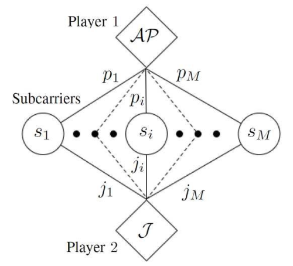
https://ieeexplore.ieee.org/document/7841922
Discrete Blotto Game
In the discrete Blotto game, the resources allocated to each battlefield must be integers, so the action space is finite. Because both players choose from finite action sets, the space of action profiles is finite as well. We can therefore represent the game with a matrix whose rows denote actions of the first player and whose columns denote actions of the second player.
In the discussion below, we use a small game with 5 indivisible resources and 3 containers. A player’s allocation can be represented by a triple. (E.g.\([1,2,2]\), \([4,0,1]\),\([0,2,3]\))
Suppose Player A chooses \([1,2,2]\) while Player B chooses \([3,0,2]\). Player A wins the second battlefield, Player B wins the first, and the third is tied. Each player therefore has one win, one loss, and one draw, so the round itself ends in a draw.
For example, in the \((S = S_1 = S_2 = 5,M = 3)\) game, a player has five allocation types. These are the five ways to sum to 5 using three non-negative integers: 5 = (5 + 0 + 0) = (4 + 1 + 0) = (3 + 2 + 0) = (3 + 1 + 1) = (2 + 2 + 1). Each allocation type has at most 6 orderings. More specifically, [4, 1, 0] and [3, 2, 0] each have 6 orderings, while [3, 1, 1], [2, 2, 1], and [5, 0, 0] each have 3. Therefore, each player has 21 possible actions in a round. If we assign payoff 1 for a victory, -1 for a loss, and 0 for a draw, every pair of allocations can be written into an \(n \times n\) matrix, where \(n\) is the number of possible actions (\(n = 21\) for \((S = 5,N = 3)\)).
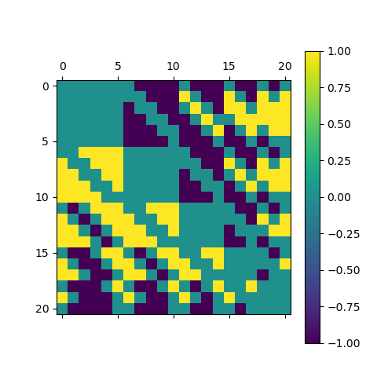
a payoff matrix P for the case (n = 21 for (S = 5,N = 3))
Each row and column represents an action from the following list of 21 actions:
$$ \begin{array}{l} {\rm{[[0, 0, 5], [0, 1, 4], [0, 2, 3], [0, 3, 2], [0, 4, 1], }}\\ {\rm{[0, 5, 0], [1, 0, 4], [1, 1, 3], [1, 2, 2], [1, 3, 1], }}\\ {\rm{[1, 4, 0], [2, 0, 3], [2, 1, 2], [2, 2, 1], [2, 3, 0], }}\\ {\rm{[3, 0, 2], [3, 1, 1], [3, 2, 0], [4, 0, 1], [4, 1, 0], [5, 0, 0]]}} \end{array} $$
Consider the mixed strategy \(v\) chosen by both players:
\begin{equation} v = (0, 0, p, p, 0, 0, 0, p, 0, p, 0, p, 0, 0, p, p, p, p, 0, 0, 0); p=1/9 \end{equation}
This assigns probability \(1/9\) to every permutation of \((3+2+0)\) and \((3+1+1)\). Then
$$ Pv = \left( { p_2, p_1,0,0, p_1, p_2, p_1,0, p_1,0, p_1,0, p_1, p_1,0,0,0,0, p_1, p_1, p_2} \right) $$
where \(p_1= -1/9, p_2=-5/9\).
The maximal value in \(Pv\) is \(0\), and it occurs exactly at the indices where \(v_i = 1/9\): \(i=3,4,8,10,12,15,16,17,18\). This shows that the best response to \(v\) is the span of those basis vectors.
$$ BR(v) = span\left\{ {e_i|{v_i} = p} \right\} $$
Therefore, \begin{equation} v \in BR_P(v) \end{equation} Therefore, the profile \((v,v)\) is a Nash equilibrium.
Continuum Blotto Game
In this section, we consider one of the simplest Blotto games:
- There are two battlefields.
- The two players have different total resources. (Blotto: 1, Enemy: E)
- Players may allocate any non-negative real amount of resources to each battlefield.
The second condition avoids a trivial symmetric case. If both players have the same total resources, they share the same action space. Whenever one player wins a battlefield, the other must win the remaining battlefield; if they choose the same allocation, both fields are tied. Every action profile therefore produces payoff 0, leaving no meaningful learning dynamics to study.
We can reduce the problem to the case in which Blotto has 1 unit of troops and the enemy has \(E<1\) units. Let the two players allocate \((b_1,b_2)\) and \((e_1,e_2)\) to the two battlefields, respectively. Players need not allocate all of their troops, so
$$ \begin{array}{l} {b_1},{b_2},{e_1},{e_2} \ge 0\\ {b_1} + {b_2} \le 1\\ {e_1} + {e_2} \le E \end{array} $$
Therefore we can use the following diagram to represent all the actions of two players.
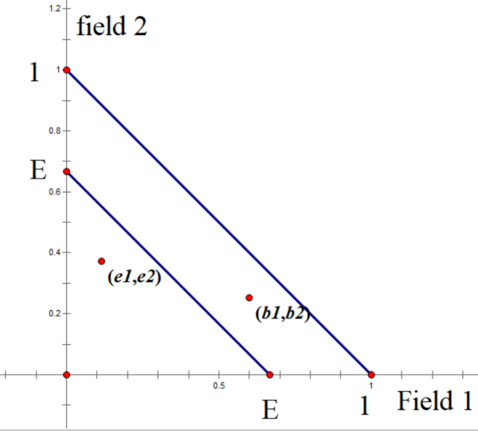
Each point in the triangle represents an action. We can then define the payoff region around a point \((x_0,y_0)\) as follows: \begin{equation} p(n;m)=p((x,y);({x_0},{y_0})) = {\mathop{\rm sgn}} \left( {x - {x_0}} \right) + {\mathop{\rm sgn}} \left( {y - {y_0}} \right) \end{equation} The figure below divides the plane into four regions: a win region, a loss region, and two draw regions.
We say that for a point \(m\),
$$ \begin{array}{l} WIN(m)=\{n| p(n;m) =2\}\\ LOSE(m)=\{n| p(n;m) =-2\}\\ DRAW(m)=\{n| p(n;m) =0\} \end{array} $$
And for a region \(A \subset R^2\),
$$ \begin{array}{l} WIN(A)=\{n| \forall m \in A, p(n;m) =2\} \\ LOSE(A)=\{n|\forall m \in A, p(n;m) =-2\}\\ DRAW(A)=\{n|\forall m\in A, p(n;m) =0\} \end{array} $$
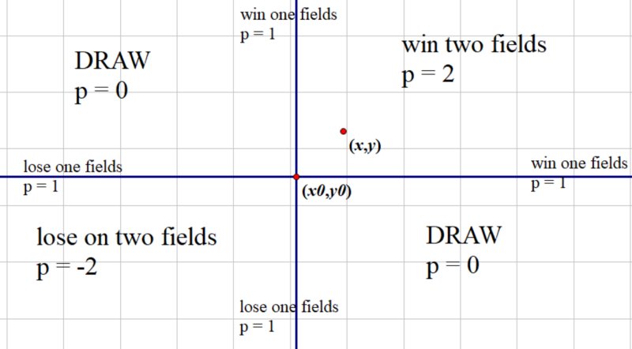
Players prefer actions that lie above and to the right of the opponent’s action in the diagram, because those actions yield higher payoffs.
Graphical explanation of Nash equilibrium in the two-field Blotto game
We first present the graphical construction of a Nash equilibrium given by Macdonell and Mastronardi in 2015. We define the sets:
$$ \begin{array}{l} {L_b} = \left\{ {\left( {b_1,b_2} \right)|{b_1} + {b_2} = 1,{b_1},{b_2} \ge 0} \right\}\\ {L_e} = \left\{ {\left( {e_1,e_2} \right)|{e_1} + {e_2} = E,{e_1},{e_2} \ge 0} \right\} \end{array} $$
Region Construction
We use the following figure to illustrate the procedure. Starting from \(D=(E,0)\) and \(C=(0,E) \in L_e\), draw the horizontal and vertical lines until they intersect \(L_b\) at the new points \(E\) and \(J\). Then draw horizontal and vertical lines back to \(L_e\), reaching \(F\) and \(K\). Repeat this procedure until no further intersections can be reached by horizontal or vertical lines.
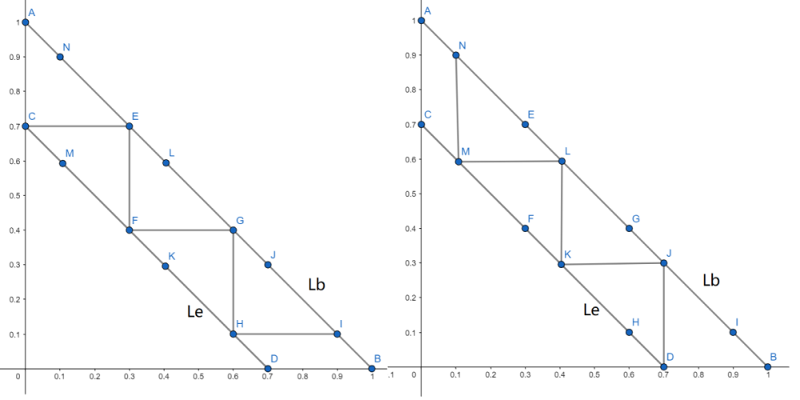
This produces two polygonal lines \(l_1\) and \(l_2\) starting from \(C\) and \(D\), respectively. When \(E=\frac{n-1}{n}, n\in \mathbb{N^+}\), the two polygonal lines coincide. Otherwise, we obtain the following diagram.
Construction of region \(b_i\) For \(E \in \left( {\frac{n - 1}{n},\frac{n}{n + 1}} \right);n \in \mathbb{N}^+\), consider the regions satisfying the following conditions:
-
above \(l_1\). \(\{(x,y)\|x=x_0,y>y_0, (x_0,y_0)\in l_2\}\)
-
to the right of \(l_2\). \(\{(x,y)\|x>x_0,y=y_0, (x_0,y_0)\in l_2\}\)
-
below \(L_b\). \(\{(x,y)\|x+y \le 1 \}\)
The intersection of these regions yields \(n\) triangles, which we label from top to bottom as \(b_1,\ldots,b_n\).
Construction of region \(e_i\) For each \(b_i\) above, define \(e_i = \{m| m\in LOSE(b_i) , m\in DRAW(b_{i'}), i\ne i' \}\).
The region of Nash Equilibrium for \(E=0.7\)
Measure Construction
- For \(\mu_B \in \Omega^B\), \(\mu_B(b_i) = 1/n\) and \(\mu_E \in \Omega^E\), \(\mu_E(e_i) = 1/n\).
- The probability measure in the red region is smaller than the probability measure in the green region. Therefore, deviating from \(e_1\) to \(e_2\) produces a smaller payoff.
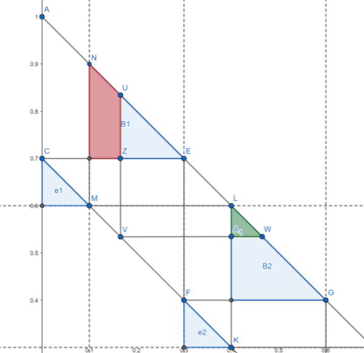
Nash Equilibrium
For any \(\mu_E \in \Omega^E\) and \(\mu_B \in \Omega^B\) satisfying the two properties above, \((\mu_E, \mu_B)\) is a Nash equilibrium.
No-Regret Learning
Learning algorithms typically balance two ideas: exploitation and exploration. Exploitation favors actions that have performed well in the past; exploration searches for promising actions that have not yet been tried often.
A regret-minimization algorithm updates the player’s policy over actions. In brief, actions that would have performed better in hindsight become more likely in the future. The player need not actually choose every action; it can evaluate the counterfactual payoff each action would have received.
For an action profile \(a\in A\), let \(s_i\) be player \(i\)’s action and \(s_{-i}\) denote the actions of the other players. Write the payoff as \(u(s_i, s_{-i})\). The algorithm compares the chosen action with each alternative \(s_{i'}\) and defines the regret of not having played \(s_{i'}\) instead of \(s_i\) as \begin{equation} regret(s_{i’},s_{i},s_{-i}) = u(s_{i’}, s_{-i}) - u(s_i, s_{-i}) \end{equation}
The player accumulates regrets for all possible actions and chooses future actions according to those accumulated values. To balance exploitation and exploration, the next action is sampled from the normalized positive regrets, so actions with higher regret become more likely. Notice that \begin{equation} regret(s_{i’},s_{i},s_{-i}) = u(s_{i’}, s_{-i}) - u(s_i, s_{-i}) = - regret(s_{i},s_{i’},s_{-i}) \end{equation}
Thus, choosing an action with high regret reduces the relative accumulated regret of the alternatives. This is why the procedure is called regret minimization: over time, play shifts toward actions that leave less regret on the table.
By the Hart and Mas-Colell theorem, if both players follow a regret-learning algorithm, the empirical frequency of play converges to the correlated-equilibrium set (CE set). Moreover, the regrets tend to zero. Given strategies \((p^1,q^1),\ldots,(p^{t-1},q^{t-1})\), there exists a strategy \(p^t\) such that, for every \(q^t\), we have
$$ \begin{equation} \left(\frac{1}{t} \sum_{s=1}^t u\left(e_i, q^s\right)-u\left(p^s, q^s\right)\right)_{i=1}^n \rightarrow C=\left\{a, a_i \leq 0 \right \} ; t \rightarrow \infty \end{equation} $$
Moreover, by Blackwell’s approachability theorem, we have the distance to the CE set as \begin{equation} d(a_t,C) \in O(1/\sqrt{t}) \end{equation}
Learning Result
The simulations show accumulated regret decreasing over time, while the empirical action distribution approaches the CE set. As learning proceeds, the average regret of both players decreases at the rate \(1/\sqrt{t}\).
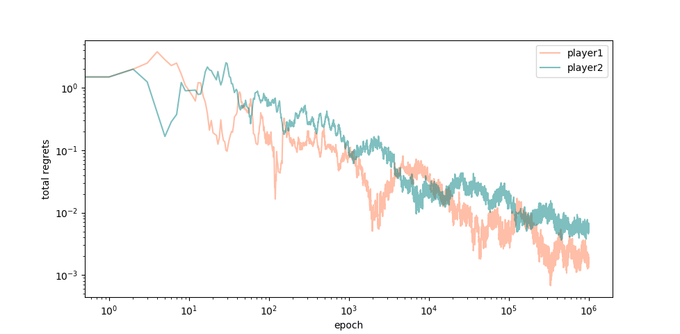
In this section, we provide several simulation results for the cases \(E=0.3,0.6,0.7\). In each graph, the x-axis is the amount of resources Blotto allocates to Battlefield 1. Because we restrict attention to points on \(L_E\) and \(L_B\), the Nash-equilibrium regions \(e_i,b_i\) are represented as intervals on the x-axis.
From the previous analysis, the Nash-equilibrium regions are \(e_1=(0,0.3), b_1=(0.3,0.7)\).
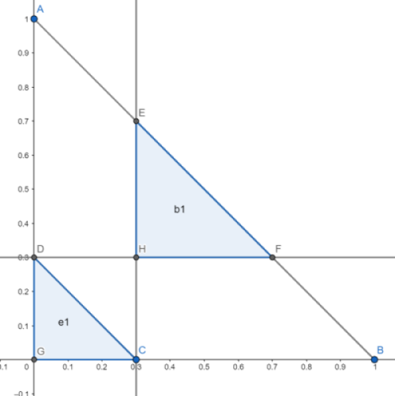
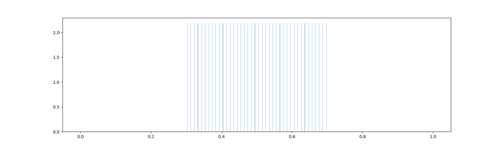
The Nash-equilibrium regions are \(e_1=(0,0.2), b_1=(0.2,0.4)\) and \(e_2=(0.4,0.6), b_2=(0.6,0.8)\).
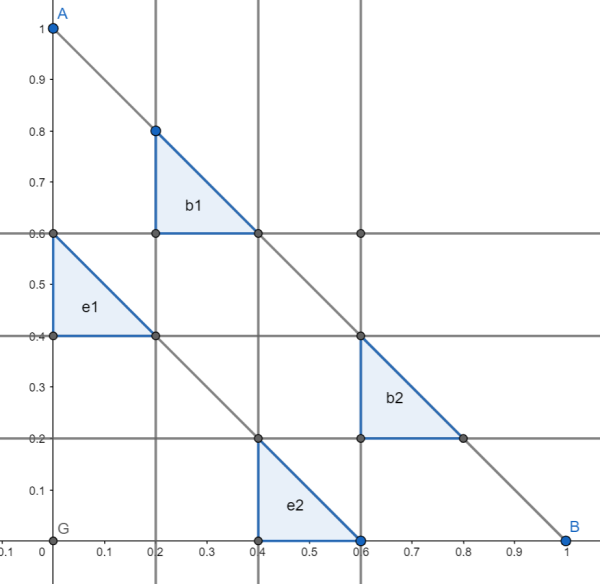
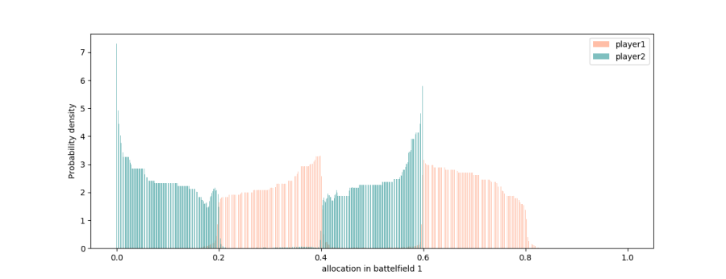
The Nash-equilibrium regions are \(e_1=(0,0.1), b_1=(0.1,0.3)\), \(e_2=(0.3,0.4), b_2=(0.4,0.6)\), and \(e_3=(0.6,0.7), b_3=(0.7,0.9)\).
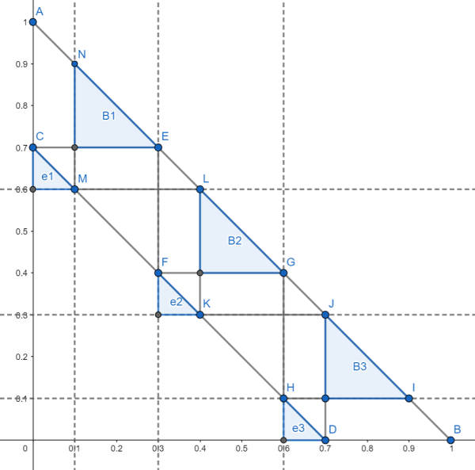
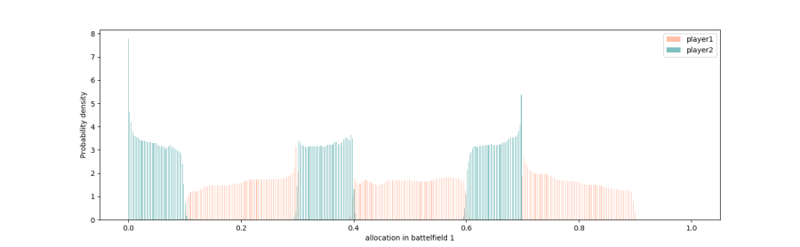
The green density for Player 2 converges to the \(e_i\) regions, while the red density for Player 1 converges to the \(b_i\) regions.